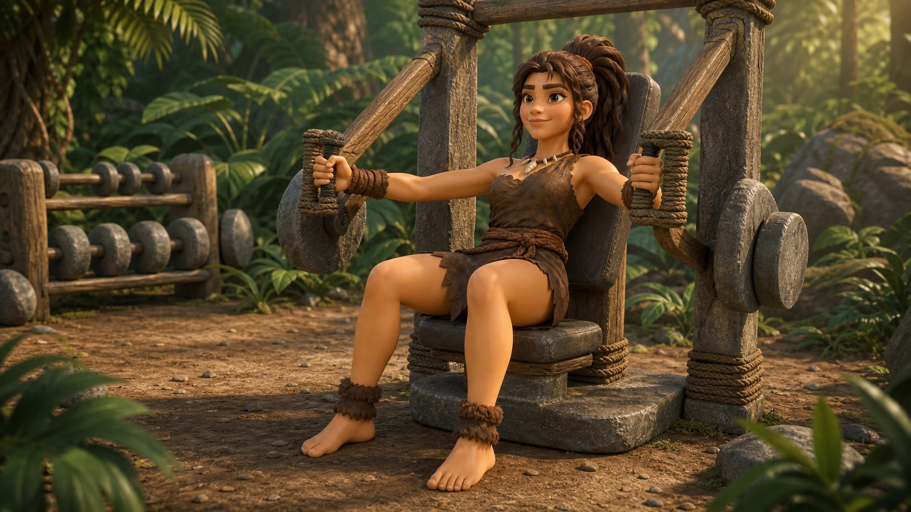

A low-pressure first visit plan for walking in, finding your rhythm, and leaving with something repeatable.
Best forNervous first-timersTime30-40 minutesGoalBuild familiarity
The first win is not intensity. It is proving you can walk in, do the plan, and leave calm.
Gym anxiety usually comes from uncertainty, not weakness. You do not need to master the whole room on day one. You need a simple route through the building and a few movements that feel controlled.
Treat the first visit like a rehearsal. Check in, warm up, try a small set of beginner-friendly stations, and leave before fatigue turns the experience messy.
Win conditionLeave knowing exactly what to repeat next time.
EffortEasy to moderate; keep two reps in reserve.
RuleA short confident plan beats wandering around.
Make the First Visit Boring on Purpose
The best first gym day has almost no drama. Pick a quiet time if you can, keep your headphones ready, and decide the stations before you arrive.
Check in and find water, lockers, or the bathroom.
Walk for five minutes until your breathing settles.
Try two machines lightly before adding load.
Leave with the next visit already planned.
Repeat the Same Loop for Two Weeks
Confidence comes from repetition. Run this exact circuit two or three times before you worry about optimizing exercises, splits, or perfect numbers.
Walkthrough
First-Day Confidence Loop
Arrival
Lobby Check-In
Walk in with one tiny job: check in, breathe, and find your first landmark.
2 minutes
Warm-Up
Easy Walking Warm-Up
Start with motion that feels familiar so your breathing and nerves settle together.
5 minutes
Orientation
Simple Machine Tour
Find the handles, seat adjustment, and weight pin before you train anything hard.
3 stops

Push
Light Chest Press
A stable machine push teaches pressing without needing a bench setup yet.
2 sets x 8 reps
Pull
Seated Row
A light row balances the first push and helps you feel your upper back working.
2 sets x 8 reps
Legs
Beginner Leg Press
The leg press lets you train the squat pattern with a clear seat and foot platform.
2 sets x 10 reps
Exit
Leave With a Repeatable Plan
Write down the machines, weights, and one thing that felt easier than expected.
1 note
First Visit Route
Lobby Check-In2 minutes
Easy Walking Warm-Up5 minutes
Simple Machine Tour3 stops
Light Chest Press2 sets x 8 reps
Seated Row2 sets x 8 reps
Beginner Leg Press2 sets x 10 reps
Leave With a Repeatable Plan1 note
Make Your Next Visit Easier
Torq Tribe can turn this first-day loop into a saved beginner routine, so the next gym visit starts with clear targets instead of guesswork.